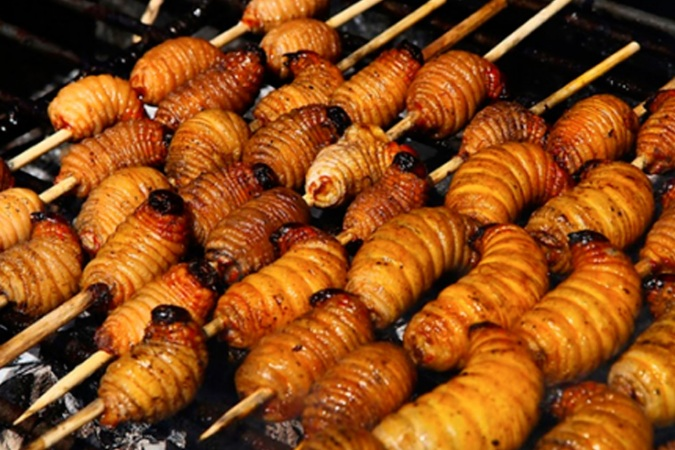

Este delicioso plato es un envuelto de hoja de bijao relleno de pescado o pollo de diferentes tipos con yuca, ají, ajo y otros condimentos naturales. El mismo ha formado parte de la gastronomía shuar desde tiempos remotos.
CHONTACURO

El plato de chontacuro (en Maito o pincho) Es un típico alimento de Morona Santiago. Su nombre proviene del quichua y significa gusano de chonta o mayon.
Algunos consumidores afirman que el chontacuro atribuye la propiedad de controlar la diabetes, el colesterol e, incluso es un purgante natural. Por otro lado, es un “Superalimento” ya que contiene altos niveles de proteína, es rico en grasas naturales y minerales, además tiene fibra y micronutrientes.
MAITO DE TILAPIA
El Maito destaca entre los platillos más populares y deliciosos de la exótica gastronomía amazónica. El mismo, consiste en un preparado de diferentes ingredientes, que pueden ser pescado, palmito, plátano verde y yuca, envueltos en una hoja de bijao o kwan panga. De hecho, la palabra “Maito” proviene del quechua norteño y significa “envuelto”.
CORVICHE
El corviche es un bocado de origen montubio, consiste en una masa elaborada con plátanos verdes, especias, maní y relleno de carne de pescado de mar. El corviche se sirve durante el desayuno, almuerzo, merienda o días festivos. Su forma de cocción puede ser frita u hornada.